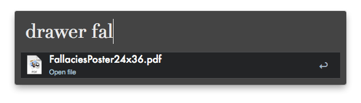
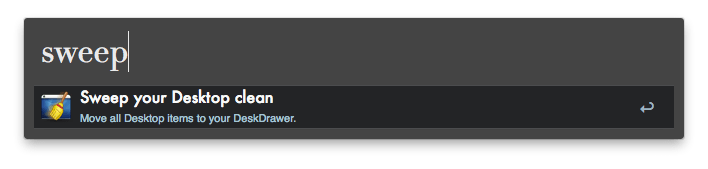

If you’d like a simple, elegant way to keep your Mac Desktop free of
all the miscellaneous clutter that inevitably ends up there, you can pay
money for a program like DesktopTidy or Unclutter, or you can use this workflow for Alfred 2 to achieve pretty much the same thing.
What it does is provide a special “drawer” folder for keeping all
your Desktop crap in, nicely out of sight, but quickly accessible (via
Alfred — see screenshot above) when you need it. Just like the top
drawer of your IRL desk!
Usage
Accessing the DeskDrawer
In Alfred, enter the keyword drawer (or—better
still—a custom hotkey), and your DeskDrawer contents will be revealed in
Alfred’s results, as shown above. From there, you can perform the
following actions on each item:
Select an item to open it with the default application.
Option-select an item to move it back your actual Desktop.
Command-select an item to reveal it in Finder (which will be the DeskDrawer folder).
Control-select an item to open it in Alfred (for further actions).
fn-select an item to Trash it.
If you have a lot of stuff in your Drawer, you can narrow the scope
of the displayed list by starting to type a name, and the results list
will be limited to matching items:

Putting stuff in the DeskDrawer
There are four ways to do this:
Use the file action called “Move to DeskDrawer” in Alfred
to move a bunch of selected files and folders to the Drawer. (Use the
Alfred hotkey for launching actions on the current Finder selection —
Command-Option-/ by default.)
Use the move keyword. Basically the same as the
previous method, except you enter the keyword directly into Alfred’s
main window instead of launching a file action.
Use the custom hotkey (eg. Ctrl-M) to move the selected items.
The “clean sweep” — type the keyword sweep into Alfred to move everything currently on your Desktop into the Drawer.

Moving stuff back to the Desktop
There are three ways to move stuff back out of the Drawer onto your Desktop:
Use the keyword unmove to undo the last movement of files/folders to the DeskDrawer. (Ideal for unintentional moves.)
Option-select an item in the Drawer list in Alfred (as previously mentioned).
Use the keyword deskrestore to dump everything out of the Drawer back on to your Desktop.
Keeping specific items permanently on the Desktop
If you have certain files or folders that you want to keep on the
Desktop and prevent being “swept” to the DeskDrawer, you can “protect”
them by either:
Use the file action called “Protect from DeskDrawer Sweep” on a selection of Desktop items.
Use the keyword protect to do the same.
You can reverse the protection with either the file action “UnProtect from DeskDrawer Sweep” or the keyword unprotect.
One more thing…
By default, the DeskDrawer folder is created in your Home folder.
However, if you’d like to put it somewhere more convenient (say, in your
Documents folder, or Dropbox), then use the keyword :movedrawer,
and you’ll be prompted to select a new location for your DeskDrawer.
You can actually even put the DeskDrawer on your Desktop itself! (It
will be automatically “protected”.)
And there you have it — the DeskDrawer for Alfred. Leave your feedback, suggestions, bug reports etc. in the Comments on my DeskDrawer webpage, or in the DeskDrawer thread on the Alfred forum.
Changelog
v1.5 — 25 March 2014
New icon for DeskDrawer folder (to fit in with OS X custom folder look).
DeskDrawer is now allowed on the Desktop itself.
“Undo” function to reverse the last “Move” to DeskDrawer or Sweep.
“Protect” specified Desktop items from being moved to the DeskDrawer during Sweeps.
Fix for XML-illegal characters in filenames.
More icons.
Removed AlleyOop updater support.
Default DeskDrawer location is now Home folder.
Local documentation (keyword: deskdrawer help)
Miscellaneous minor tweaks and fixes.
v1.4 — 2 April 2013
New keyword - “move” - to move selected Finder items to Drawer.
(Basically the same as the File Action, but just another way of doing
it.)
Changed “movedrawer” keyword to “:movedrawer” to avoid conflict with
“move”. Figured it’s a once-in-a-blue-moon action, so doesn’t need to
be easily accessible.
v1.3 — 1 April 2013
New action: “fn-select” item to Trash it.
Consolidated and tidied up workflow setup panel.
Support for Alleyoop auto-updater (http://www.alfredforum.com/topic/1582-alleyoop-update-alfred-workflows/)
Minor cosmetic tweaks.
v1.2 — 2 Feb 2013
Added “movedrawer” functionality - choose the storage location of your DeskDrawer.
v1.1 — 1 Feb 2013
Small update to take advantage of the new “Browse in Alfred” Action, rather than doing it clunkily with Applescript.